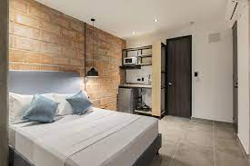
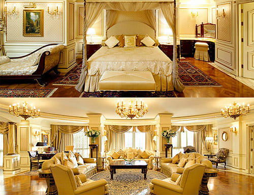
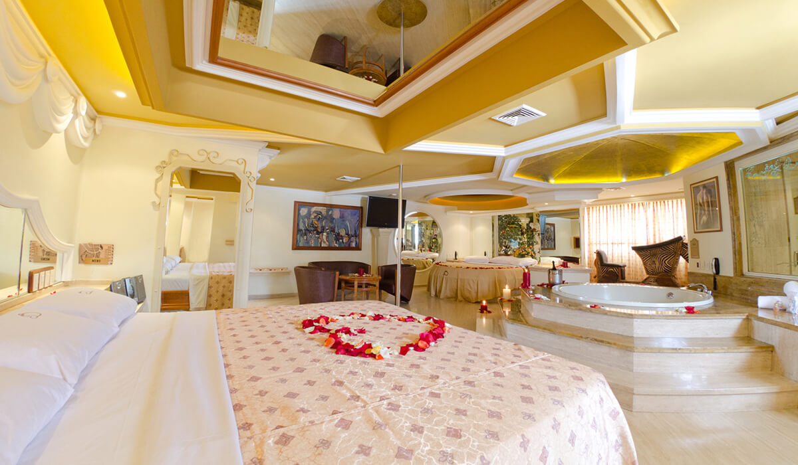

En SweetDreams, nuestro objetivo es hacer que cada habitación sea un refugio de tranquilidad y
comodidad para nuestros huéspedes. Ya sea que estés aquí por negocios o por placer, nuestras
habitaciones están diseñadas para hacer que tu estancia sea excepcional.
Todas nuestras habitaciones están equipadas con comodidades modernas, incluyendo televisores de
pantalla plana, minibar, acceso a Internet de alta velocidad y servicio de habitaciones las 24
horas. Además, cada huésped tiene acceso a nuestras áreas comunes, como el restaurante y el spa,
para disfrutar al máximo de su estancia.
Habitacion estandar
Descripción:Nuestras habitaciones estándar son acogedoras y elegantes, ideales para
viajeros que buscan comodidad a un precio accesible. Cuentan con una cama cómoda, baño
privado y todas las comodidades necesarias.
Precio:Dese $80 USD por noche.
Temporada:Disponible durante todo el año.
Ventajas sobre las otras habitaciones:Las habitaciones estándar son ideales para aquellos
que buscan una estancia cómoda sin gastos adicionales. Son una excelente opción para parejas o
viajeros individuales que desean experimentar la calidad de SweetDreams a un precio asequible.

Suit Junior
Descripción:Las Suites Junior ofrecen un espacio más amplio con una zona de estar separada
y un baño lujoso. Son ideales para huéspedes que valoran el espacio adicional y el confort.
Precio:Desde $120 USD poor noche.
Temporada:Disponoble durante todo el año.
Ventajas sobre las otras habitaciones:Las Suites Junior son perfectas para aquellos que
desean un ambiente más espacioso y lujoso sin llegar al nivel de las suites presidenciales.
Son ideales para estancias prolongadas y ofrecen un ambiente relajante.
Suit Ejecutiva
Descripción:Nuestras Suites Ejecutivas están diseñadas para viajeros de negocios. Ofrecen
una amplia zona de trabajo, conexión Wi-Fi de alta velocidad y servicios exclusivos para una
estancia productiva.
Precio:Desde $150 USD por noche.
Temporada:Disponible durante todo el año.
Ventajas sobre las otras habitaciones:Las Suites Ejecutivas son ideales para viajeros de
negocios que desean un espacio tranquilo y eficiente para trabajar. Ofrecen comodidades
adicionales para mejorar la productividad.
Suit Luna de Miel
Descripción:Las Suites de Luna de Miel son románticas y encantadoras, con una cama
con dosel y una bañera de hidromasaje. Son perfectas para parejas que celebran momentos
especiales.
Precio:Desde $150 USD la noche.
Temporada:Disponoble durante todo el año.
Ventajas sobre las otras habitaciones:Estas suites ofrecen un ambiente romántico y lujoso,
perfecto para parejas que desean celebrar su amor. La bañera de hidromasaje y la decoración especial
son ventajas destacadas.

Suit Presidencial
Descripción:Nuestras Suites Presidenciales son la cima del lujo, con amplios espacios, una
sala de estar y una terraza privada con vistas panorámicas. Son ideales para huéspedes que buscan
lo mejor de lo mejor.
Precio:Desde $250 USD la noche.
Temporada:Disponoble durante todo el año
Ventajas sobre las otras habitaciones:Estas suites ofrecen la máxima amplitud y lujo. La terraza
privada con vistas es una ventaja única que las distingue.

Nota
Es importante tener en cuenta que los precios pueden variar según la temporada, la
disponibilidad y la categoría de habitación específica seleccionada. Los precios mencionados
son aproximados y pueden cambiar. Se recomienda verificar los precios exactos y la disponibilidad
al realizar una reserva. Cada tipo de habitación en el Hotel SweetDreams está diseñado para
ofrecer una experiencia única y satisfactoria a nuestros huéspedes, adaptada a sus necesidades
y preferencias individuales.